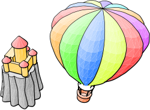
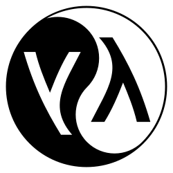
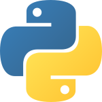

ADA
Ada est un langage de programmation orienté objet dont les premières versions remontent au début des années 1980. La dernière version publiée est Ada 2022. Le nom « Ada » a été choisi en l’honneur d’Ada Lovelace, première informaticienne de l’histoire.
1980

Smalltalk
Smalltalk est un langage de programmation orienté objet, réflexif et dynamiquement typé. Il fut l'un des premiers langages de programmation à disposer d'un environnement de développement intégré complètement graphique. Il a été créé en 1972. Il est inspiré par les langages Lisp et Simula. Il a été conçu par Alan Kay, Dan Ingals, Ted Kaehler, Adele Goldberg au Palo Alto Research Center de Xerox. Le langage a été formalisé en tant que Smalltalk-80 et est depuis utilisé par un grand nombre de personnes. Smalltalk est toujours activement développé.
1980

JavaScript
JavaScript est un langage de programmation de scripts principalement employé dans les pages web interactives et à ce titre est une partie essentielle des applications web. Avec les langages HTML et CSS, JavaScript est au cœur des langages utilisés par les développeurs web. Une grande majorité des sites web l'utilisent et la majorité des navigateurs web disposent d'un moteur JavaScript pour l'interpréter.
1996

C
C est un langage de programmation impératif, généraliste et de bas niveau. Inventé au début des années 1970 pour réécrire Unix, le langage C est encore largement utilisé. De nombreux langages plus modernes comme C++, C#, Java et PHP ou JavaScript ont repris une syntaxe similaire au C et reprennent en partie sa logique. C offre au développeur une marge de contrôle importante sur la machine (notamment sur la gestion de la mémoire) et est de ce fait utilisé pour réaliser les « fondations » (compilateurs, interpréteurs, …) de ces langages plus modernes.
1972

Lisp
Lisp est la plus ancienne famille de langages de programmation à la fois impératifs et fonctionnels. Développé initialement en tant que modèle pratique pour représenter des programmes (par contraste avec la notion théorique de machine de Turing), il est devenu, dans les années 1970 et 80, un des langages de choix (comme le langage Prolog) pour la recherche en intelligence artificielle. Les langages Lisp sont aujourd'hui utilisés dans de nombreux domaines, de la programmation Web à la finance, et dans certains cursus de formation en informatique.
1958

Python
Python est un langage de programmation interprété, multiparadigme et multiplateformes. Il favorise la programmation impérative structurée, fonctionnelle et orientée objet. Il est doté d'un typage dynamique fort, d'une gestion automatique de la mémoire par ramasse-miettes et d'un système de gestion d'exceptions ; il est ainsi similaire à Perl, Ruby, Scheme, Smalltalk et Tcl.
1991
